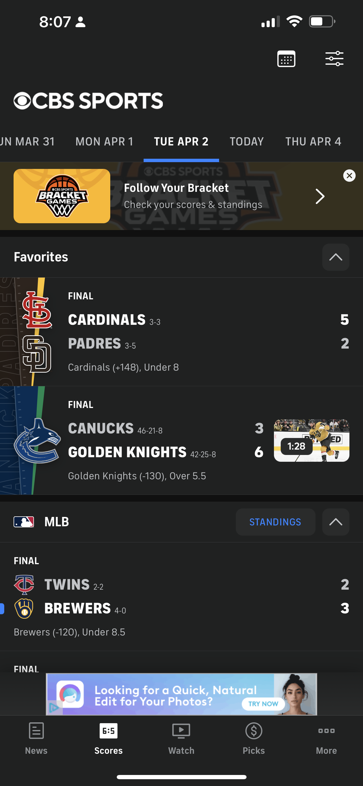
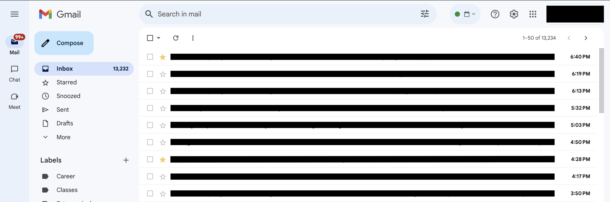
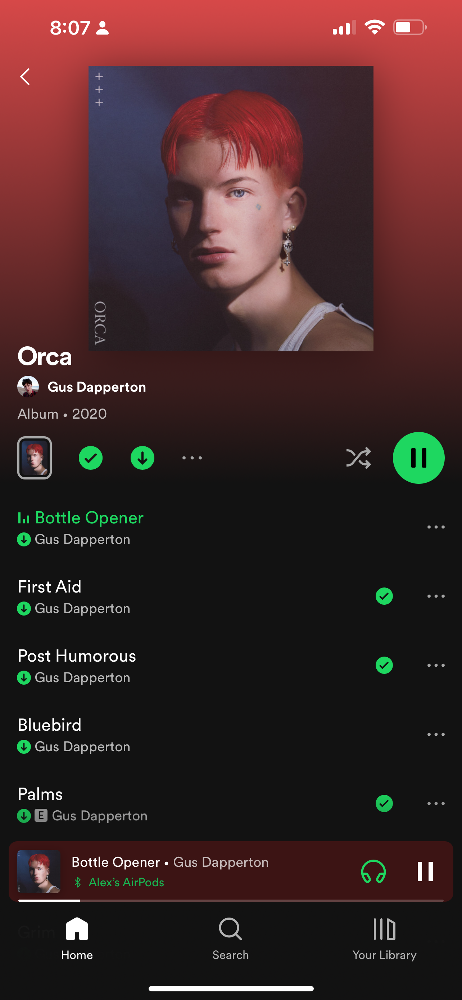
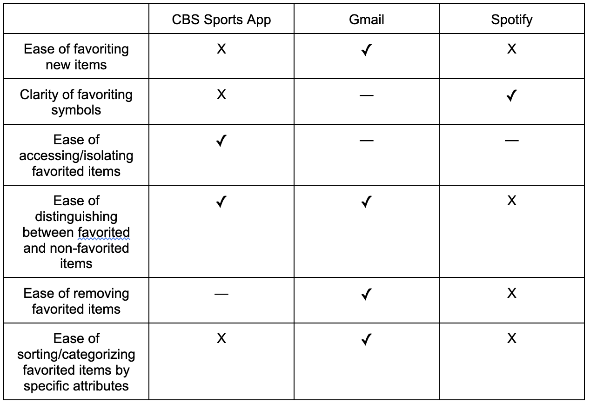

In highly competitive industries, the usability and efficiency of certain features on a company website can make vast differences on user engagement, experience, and company profitability. These seemingly small variations across interface features can build into substantial swings that ultimately push companies with better online user experiences towards having larger market shares.
Therefore, even when developing common features of a website, it is important to analyze the pros and cons of existing websites that have these features via a Competitive Analysis, synthesizing the best aspects across them to build out something that maximizes accessibility and usability.
In this project, we specifically look at websites that have aggregators, such as shopping carts, equipped with a favoriting function.
To inform which features our aggregator should include in its design, we first conduct a Competitive Analysis using three different websites/apps across six different factors.
The first website used was the CBS Sports App, which is an app that keeps track of daily scores and news articles from all different sports and allows users to favorite or aggregate their favorite teams.
CBS Sports App URL: https://www.cbssports.com/mobile
The second website used was the Gmail website, which is Google's email website and allows users to star or aggregate important emails.
Gmail URL: https://mail.google.com/mail/u/0/
The last website used was the Spotify app, which is an app that enables users to stream all different kinds of music and allows users to like or aggregate their favorite songs.
Spotify URL: https://open.spotify.com/
The following factors were used in the Competitive Analysis:
The resulting Competitive Comparison Chart is shown:
For the CBS Sports App, it was most successful at clearly delineating between favorited and non-favorited teams on the homepage, with all favorited teams' scores and news appearing at the very top of the screen and all other scores appearing below that. In this way, users have a very easy time finding the relevant information for their favorite teams any time they open the app. However, the CBS Sports App was least successful at making the favoriting/unfavoriting process clear and intuitive for users. Specifically, in order to favorite a new team, users either have to navigate to a right, bottom tab labeled as “More” or click on a current score, then click on the specific team, and finally star it in the top right corner. This long user flow results in poor memorability for users who might only add a new favorite team every few months. There is also no way to “sort” the favorited teams in any particular order, which makes the UI cluttered if users favorite a lot of teams that are all in-season at the same time.
For Gmail, it was successful across the majority of the factors analyzed above, with the starring of emails being: easy to visually distinguish against other non-starred emails, simple and efficient to favorite or unfavorite (a single click), and straightforward to sort or categorize within the starred emails tab. Gmail's least successful factor included the use of a less intuitive star icon compared to the favoriting symbols employed by the other competitors in the analysis. It's also not as immediately obvious where the starred tab is on the screen.
For Spotify, the main category it succeeded at was in its use of a clear purple heart symbol for denoting how to favorite songs, which provides good color contrast relative to the darker background of the app and serves as a metaphor for when people like something in real life. This good color contrast also helps users immediately see the album for all Liked Songs on the homepage. However, overall, Spotify really struggled in the Competitive Comparison Analysis, with it being difficult to both distinguish between liked and regular songs within albums and to find the button to like/unlike a song. Spotify as an app is more centered around creating new albums that share a coherent theme, rather than having a strict like/unlike separation across songs, but it still struggles in some of the basic factors looked at above.
I would definitely like to implement a clear visual distinction between favorited and non-favorited items. Specifically, the hierarchical distinction that the CBS Sports App uses I found was very effective and useful from a user perspective. I also liked how easy it was to star/favorite items in Gmail as it was the only interface that required a single click to favorite or unfavorite, and I will definitely make the favoriting feature similarly accessible in my design. Finally, Gmail also was the only interface that allowed users to sort the favorited items in a variety of ways, providing greater flexibility to users without cluttering the interface. In my design, I plan on providing a handful of common ways users can filter/sort the favorited items.
Leveraging the takeaways from the Competitive Analysis above, I decided to create an aggregator themed around restaurants located around Brown University's campus. Specifically, the website allows users to filter the listed restaurants based on the available food options (i.e. vegan, vegetarian, or seafood options) and distance to campus, sort them in increasing order of average entree price, and favorite/unfavorite them so that they appear at the top/bottom. These tools are aimed at helping students more efficiently narrow down their next spot to eat, so that they can satisfy their various dietary and accessibility needs/desires. Finally, there is also a reset button on the website that allows users to clear out any set filters/sorting and view the full range of restaurants on the website.
Link to Deployed Vercel App: development-pink.vercel.app
By first conducting a competitive analysis looking at how existing websites have designed their aggregators, I was able to evaluate the subtle, and often overlooked, differences between them before deciding on aspects of each I wanted to incorporate into my own implementation. I was surprised to find that taking this initial step to plan out what features I wanted to include in my design significantly expedited the development process and made the final product much better. Even though the pre-development stages of this project didn't necessarily involve drawing up lo-fi wireframes or hi-fi prototypes, having some form of visualization pertaining to different aspects of the aggregator was incredibly helpful. Ultimately, in particularly saturated industries with heavy online dependence, conducting a Competitive Analysis can serve as a crucial differentiating factor for companies when developing their various features.